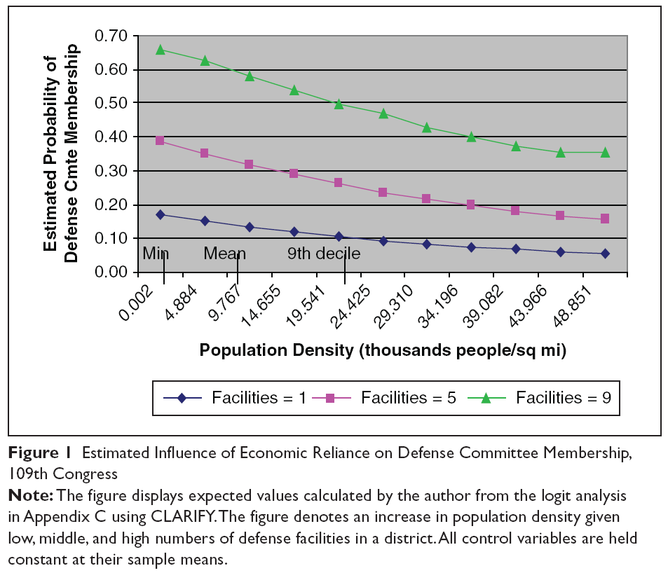

This study examines worker-recuperated enterprises (ERTs) in Argentina, appraising the social and economic transformations that these innovations prefigure, especially during hard economic times. Through comprehensive analysis of self-management practices and workers' cooperatives, we explore how these organizational forms respond to neoliberal crisis and reshape the political economy of Argentina.
To test my hypotheses, I created several dependent variables that capture the multifaceted nature of economic reliance. For instance, the probability of committee assignment is modeled as \( P(A|B) = \frac{P(B|A)P(A)}{P(B)} \), where \(A\) represents committee membership and \(B\) represents district economic reliance.
Our analytical framework incorporates both quantitative and qualitative measures. The core estimation relies on the following specification:
Technical and Tactical Intelligence.1 This variable captures whether a member serves on key defense-related committees.
Aggregating prime contract data is relatively easy.2 We compile comprehensive data on defense contracts awarded to facilities within congressional districts.
| Economic Reliance | 106th | 107th | 108th | 109th |
|---|---|---|---|---|
| Population density, 1st decile | .23 (.03)*** | .21 (.03)*** | .28 (.03)*** | .24 (.03)*** |
| Population density 9th decile | .09 (.03)** | .10 (.03)** | .14 (.04)*** | .14 (.04)*** |
| Difference | .14 (.04)*** | .11 (.04)** | .14 (.04)** | .09 (.04)* |
| Percentage change | 60.59*** | 51.12** | 48.88** | 39.44*† |
Note: Table entries are calculated by the author from the logit analyses in Appendix C using CLARIFY. Entries are predicted probabilities. Standard errors in parentheses.
†p < .05, one‐tailed. *p < .05; **p < .01; ***p < .001, two‐tailed.

The authors would like to express their sincere gratitude to Prof Salah Ghabri (Department of Medical Evaluation, French National Authority for Health, HAS) for his invaluable contributions to this study. Prof Ghabri provided critical insights into the study design, data interpretation, and manuscript revision, which greatly enhanced the quality of the work.
Mingye Zhao https://orcid.org/0000-0002-7709-9374
MZ and TS contributed equally to this work. MZ, TS, and WT had full access to all study data and are responsible for the accuracy of the data analysis. MZ, TS, and WT take responsibility for the integrity of the data. Concept and design: MZ, TS, and WT; acquisition of data: MZ, TS, HS; analysis and interpretation of data: MZ, TS, HS; drafting of manuscript: MZ, TS, HS; critical revision of the manuscript for important intellectual content: MZ, HS, HL, WT; statistical analysis: MZ, TS, HS, HL; obtaining funding: WT; administrative and technical support: WT; supervision: WT.
The authors disclosed receipt of the following financial support for the research, authorship, and/or publication of this article: This research was supported by the General Program of National Natural Science Foundation of China (grant 72174207) and the Postgraduate Research and Practice Innovation Program of Jiangsu Province (grant 3322500029).
The authors declared no potential conflicts of interest with respect to the research, authorship, and/or publication of this article.
The full data set is available upon request from the corresponding author.
Supplemental material for this article is available online.
Further details on the CLARIFY simulations used to generate the predicted probabilities in Table 1. The simulations were run with 1,000 draws from the estimated multivariate normal distribution of the coefficients.